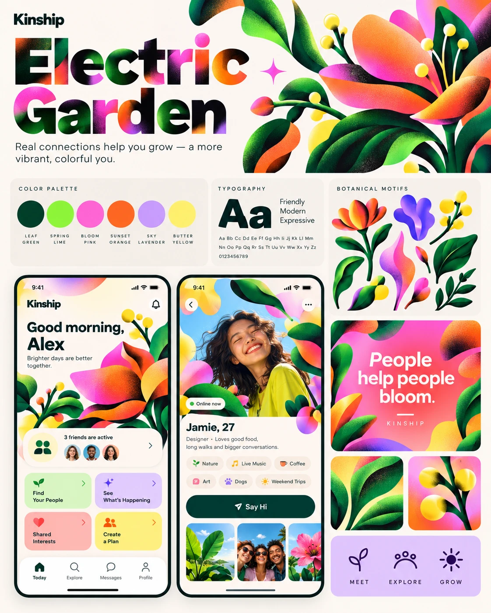
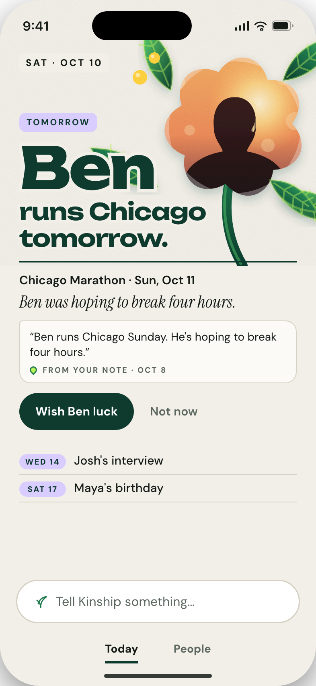
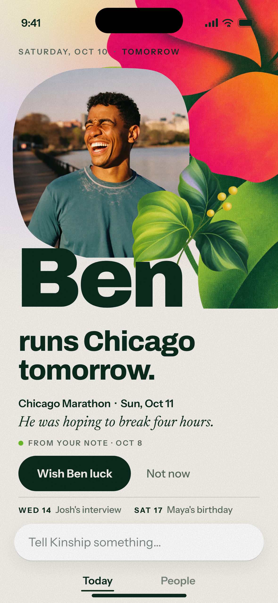
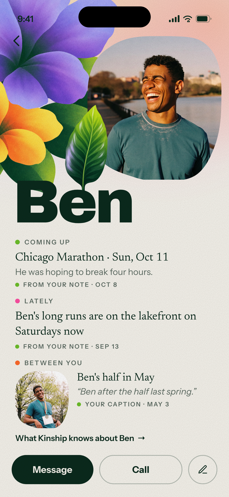
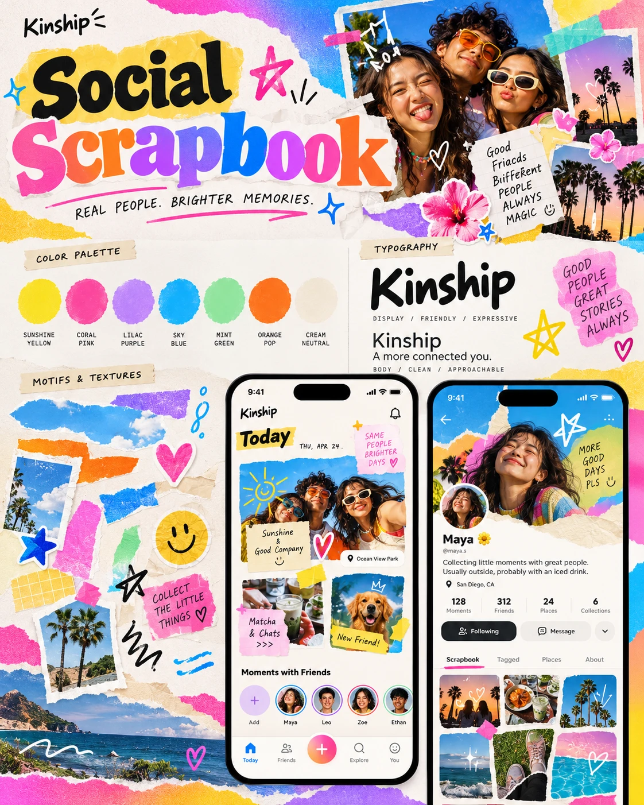
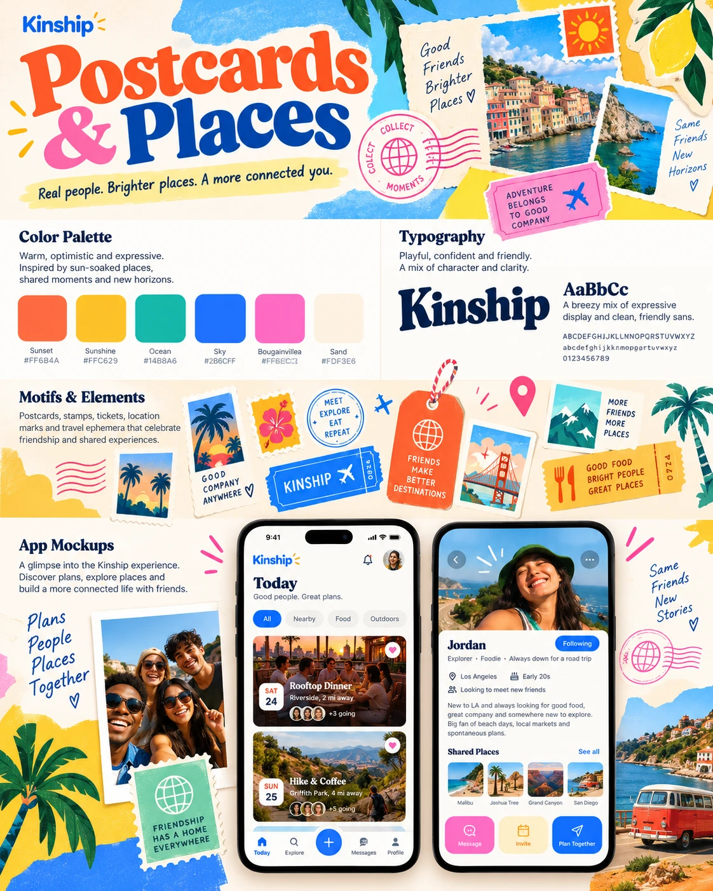
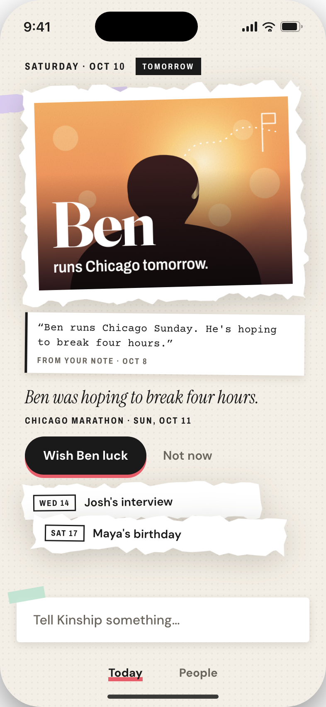
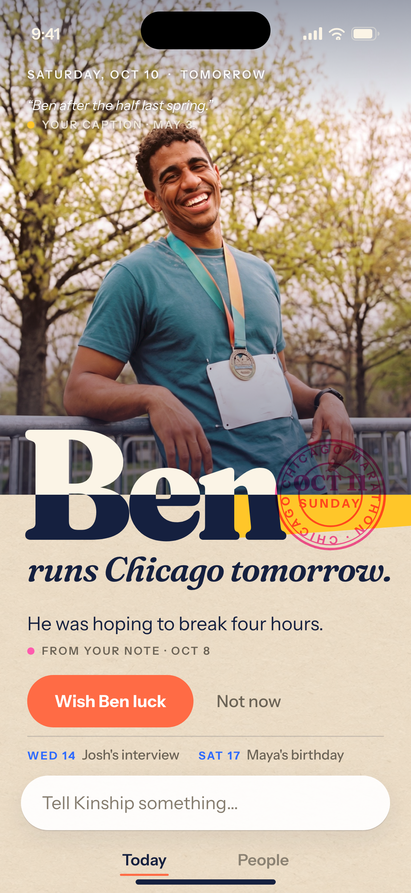
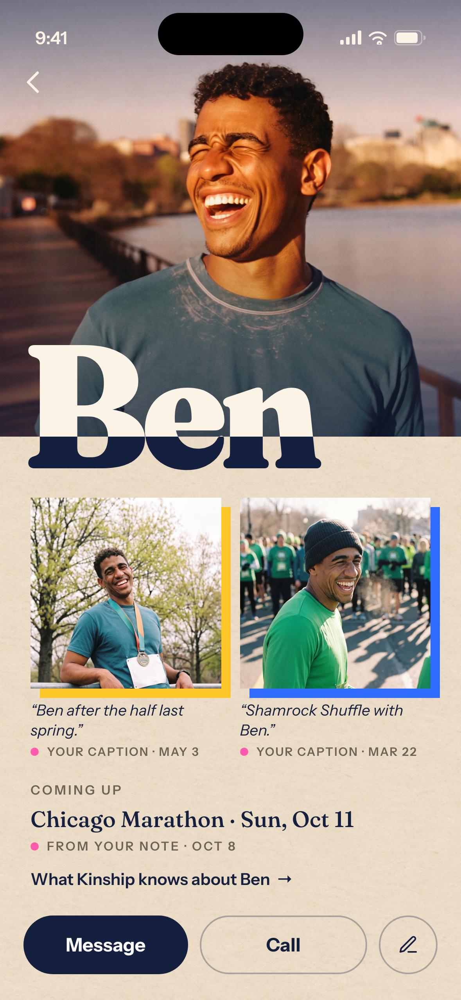

<!doctype html>
<html lang="en">
<head>
<meta charset="utf-8">
<title>Stage 1 · side by side with the boards</title>
<!-- Query: row=a|b. Captured at 1680×900. Board → PR #57 → Stage 1. -->
<link href="https://fonts.googleapis.com/css2?family=Instrument+Sans:wght@400;600;700&display=block" rel="stylesheet">
<style>
  body { margin: 0; background: #141414; color: #EDEDED; font-family: "Instrument Sans", system-ui, sans-serif; }
  .row { width: 1680px; height: 900px; display: grid; grid-template-columns: 560px 300px 300px 300px; gap: 44px; padding: 36px 48px 0; box-sizing: border-box; align-items: start; }
  .cell h3 { margin: 0 0 10px; font: 700 11px/14px "Instrument Sans"; letter-spacing: .18em; text-transform: uppercase; color: #9A9A9A; }
  .cell h3 b { color: #fff; }
  .cell p { margin: 10px 0 0; font: 400 13px/18px "Instrument Sans"; color: #B9B9B9; max-width: 300px; }
  .board { width: 560px; height: 700px; object-fit: cover; object-position: top; border-radius: 10px; display: block; }
  .shot { width: 300px; height: 650px; object-fit: cover; object-position: top; border-radius: 22px; display: block; box-shadow: 0 10px 40px rgba(0,0,0,.5); }
  .title { position: absolute; left: 48px; top: 820px; font: 600 14px/18px "Instrument Sans"; color: #9A9A9A; }
</style>
</head>
<body>
<div id="root"></div>
<script>
const q = new URLSearchParams(location.search); const row = q.get("row") || "a";
const A = `<div class="row">
  <div class="cell"><h3><b>The board</b> · Electric Garden</h3><p>Art bigger than the page; grain and airbrushed gradients; type as a window; the photo embedded in the garden.</p></div>
  <div class="cell"><h3><b>PR #57</b> · Overgrown</h3><p>A vector flower beside the type; a silhouette for the person; a form below.</p></div>
  <div class="cell"><h3><b>Stage 1</b> · Today</h3><p>Original grainy botanical art cut by the page; the person in a fluid mask with a leaf crossing in front; the name at poster scale.</p></div>
  <div class="cell"><h3><b>Stage 1</b> · Ben's page</h3><p>The same language on the person: bloom, photo, leaf, name; the facts as open paper with a source on every line.</p></div>
</div>`;
const B = `<div class="row">
  <div class="cell"><h3><b>The boards</b> · Social Scrapbook, Postcards &amp; Places</h3><p>Photographs first; hard colour fields; a soft heavy serif; a postmark as the one tactile mark.</p></div>
  <div class="cell"><h3><b>PR #57</b> · Fragments</h3><p>A drawn silhouette; torn paper as every container; a typewriter note.</p></div>
  <div class="cell"><h3><b>Stage 1</b> · Today</h3><p>The memory photo full-bleed with its own caption and source; the name split by the photograph's edge; a dated postmark; a yellow field.</p></div>
  <div class="cell"><h3><b>Stage 1</b> · Ben's page</h3><p>A portrait, the split name, and the collection: two captioned prints on colour fields, hard edges, no tape.</p></div>
</div>`;
document.getElementById("root").innerHTML = row === "a" ? A : B;
</script>
</body>
</html>
